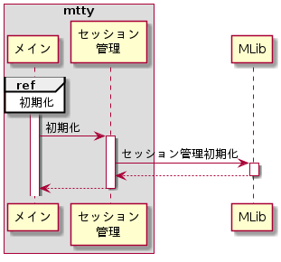
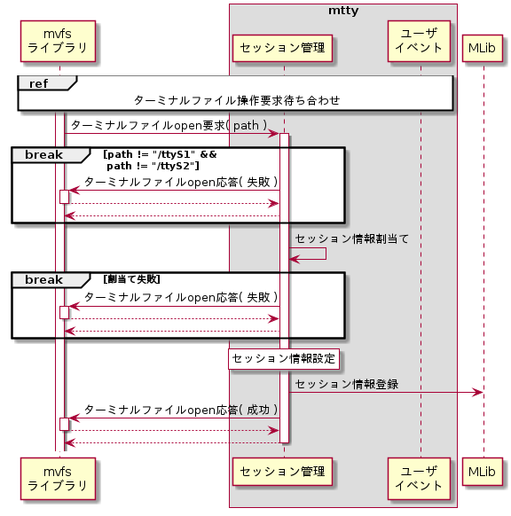
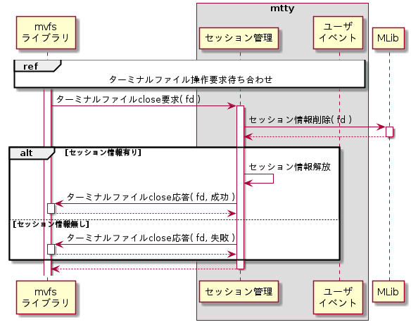
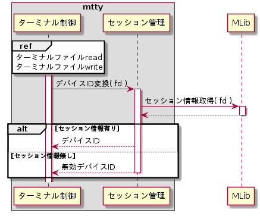

セッション管理モジュール
セッション管理モジュールは下記機能を持つ。
初期化
mtty起動時に、セッション情報を初期化する。シーケンスを以下に示す。

セッション管理初期化
セッション情報はリンクリストを用いて管理する。リンクリストの初期化は、MLibライブラリのMLibListInit()を用いて行う。設定パラメータを以下に示す。
| # | 引数名 | 設定値 |
| 1 | *pList | (リストハンドルポインタ) |
セッション接続
ターミナルファイルopen要求時にセッション接続として、セッション情報を生成し管理リストに追加し、応答する。シーケンスを以下に示す。

ターミナルファイルパスチェック
ターミナルファイルopen要求のファイルパスがmttyで管理するターミナルファイルか判定する。ターミナルファイルでない場合はターミナルファイルopen応答を失敗で送信し処理を中断する。
| # | パス | 説明 |
| 1 | /ttyS1 | シリアルポート1 |
| 2 | /ttyS2 | シリアルポート2 |
セッション情報割当て
セッション情報をC標準ライブラリのmalloc()を用いて割り当てる。設定パラメータを以下に示す。
| # | 引数名 | 設定値 |
| 1 | size | (セッション情報サイズ) |
セッション情報設定
ターミナルファイルopen要求のセッション情報作成を参照のこと。
セッション情報登録
MLibライブラリのMLibListInsertHead()を用いて、セッション情報を管理リストに登録する。設定パラメータを以下に示す。
| # | 引数名 | 設定値 |
| 1 | *pList | (セッション情報管理リストへのポインタ) |
| 2 | *pNewNode | (作成したセッション情報へのポインタ) |
ターミナルファイルopen応答
外部仕様(ターミナルファイルopen要求処理機能)のターミナルファイルopen応答を参照のこと。
セッション切断
ターミナルファイルclose要求時にセッション切断として、セッション情報を管理リストから削除し、VfsClose応答を送信する。シーケンスを以下に示す。

セッション情報削除
MLibライブラリのMLibListSearchHead()を用いて、管理リストからグローバルファイルディスクリプタに該当するセッション情報を検索し、削除する。設定パラメータを以下に示す。
| # | 引数名 | 設定値 |
| 1 | *pList | (セッション管理リストへのポインタ) |
| 2 | pCallback | (検索比較関数ポインタ) |
| 3 | *pParam | (グローバルFD格納先ポインタ) |
| 4 | method | MLIB_LIST_REMOVE |
セッション情報解放
C標準ライブラリのfree()を用いて、グローバルディスクリプタに対応するセッション情報を解放する。設定パラメータを以下に示す。
| # | 引数名 | 設定値 |
| 1 | *ptr | (セッション情報格納先ポインタ) |
ターミナルファイルclose応答
ターミナルファイルclose応答は、mvfsライブラリのLibMvfsSendVfsCloseResp()を用いる。詳細はターミナルファイルclose応答のターミナルファイルclose応答を参照のこと。
デバイスID変換
セッション情報からオープンされているターミナルファイルのグローバルFDをデバイスIDに変換する。シーケンスを以下に示す。

セッション情報取得
MLibライブラリのMLibListSearchHead()を用いて、グローバルFDに該当するセッション情報を取得する。設定パラメータを以下に示す。
| # | 引数名 | 設定値 |
| 1 | *pList | (セッション管理リストへのポインタ) |
| 2 | pCallback | (検索比較関数ポインタ) |
| 3 | *pParam | (グローバルFD格納先ポインタ) |
| 4 | method | MLIB_LIST_GET |